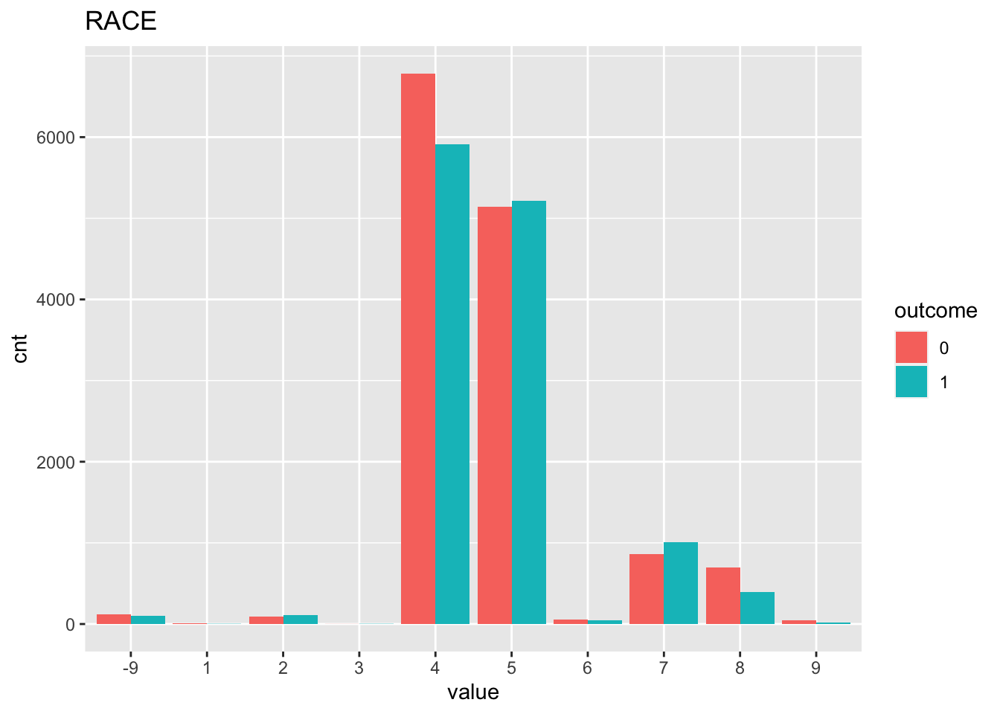

Last updated: 2020-12-18
Checks: 6 1
Knit directory: teds_ml/
This reproducible R Markdown analysis was created with workflowr (version 1.6.2). The Checks tab describes the reproducibility checks that were applied when the results were created. The Past versions tab lists the development history.
The R Markdown is untracked by Git. To know which version of the R Markdown file created these results, you’ll want to first commit it to the Git repo. If you’re still working on the analysis, you can ignore this warning. When you’re finished, you can run wflow_publish to commit the R Markdown file and build the HTML.
Great job! The global environment was empty. Objects defined in the global environment can affect the analysis in your R Markdown file in unknown ways. For reproduciblity it’s best to always run the code in an empty environment.
The command set.seed(20201124) was run prior to running the code in the R Markdown file. Setting a seed ensures that any results that rely on randomness, e.g. subsampling or permutations, are reproducible.
Great job! Recording the operating system, R version, and package versions is critical for reproducibility.
Nice! There were no cached chunks for this analysis, so you can be confident that you successfully produced the results during this run.
Great job! Using relative paths to the files within your workflowr project makes it easier to run your code on other machines.
Great! You are using Git for version control. Tracking code development and connecting the code version to the results is critical for reproducibility.
The results in this page were generated with repository version be9f492. See the Past versions tab to see a history of the changes made to the R Markdown and HTML files.
Note that you need to be careful to ensure that all relevant files for the analysis have been committed to Git prior to generating the results (you can use wflow_publish or wflow_git_commit). workflowr only checks the R Markdown file, but you know if there are other scripts or data files that it depends on. Below is the status of the Git repository when the results were generated:
Ignored files:
Ignored: .DS_Store
Ignored: .Rhistory
Ignored: analysis/.DS_Store
Untracked files:
Untracked: analysis/alc_completion_2017.Rmd
Untracked: analysis/cocaine_completion_2017.Rmd
Untracked: analysis/meth_completion_2017.Rmd
Untracked: analysis/mj_completion_2017.Rmd
Untracked: analysis/opioid_completion_2017_medicaid.Rmd
Untracked: analysis/tx_completion_2017.Rmd
Untracked: analysis/tx_completion_2017_lg.Rmd
Untracked: data/.ipynb_checkpoints/
Untracked: data/TEDS-D-2007-DS0001-data-excel.tsv
Untracked: data/clean_data.ipynb
Untracked: data/expansion-status-interactive-map_10.1.20-2.csv
Untracked: data/medicaid_expansion.csv
Untracked: data/teds4aequitas.csv
Untracked: data/tedsa_puf_2017.csv
Untracked: data/tedsd_puf_2017.csv
Untracked: output/teds_predictions.csv
Untracked: tx_completion_2017.Rmd
Unstaged changes:
Deleted: analysis/feature_exploration.Rmd
Modified: analysis/index.Rmd
Modified: analysis/opioid_completion_2017.Rmd
Note that any generated files, e.g. HTML, png, CSS, etc., are not included in this status report because it is ok for generated content to have uncommitted changes.
There are no past versions. Publish this analysis with wflow_publish() to start tracking its development.
Refer to the codebook for variable descriptions.
Response: Successful completion of short or long-term cocaine treatment
Features: See myvars defined below.
mydata <- read.csv("data/tedsd_puf_2017.csv")
medexp <- read.csv("data/medicaid_expansion.csv")
# merge
mydata <- merge(mydata, medexp, by='STFIPS')
# filter
mydata <- mydata %>% filter(SUB1 == 3, SERVICES %in% c(4,5)) # marijuana
mydata$COMPLETED = ifelse(mydata$REASON==1, 1, 0) #create response variable
myvars <- c("ROUTE1", "FREQ1", "FRSTUSE1", "IDU", "ALCFLG", "BENZFLG", "PSYPROB", "HLTHINS", "PRIMPAY", "AGE", "GENDER", "LIVARAG", "DIVISION", "METHUSE", "NOPRIOR", "EDUC", "HERFLG","RACE","MARSTAT","PRIMINC","ETHNIC","ARRESTS_D", "SUB2", "MEDEXP")
response = "COMPLETED"
teds <- as.data.frame(lapply(mydata[myvars], factor))
teds[, response] = mydata[, response]First, we check to see if our classes are balanced.
table(teds[,response])
0 1
13807 12812 In this case it looks ok! Next, we can vizualize some (or all) of the relationships between the features and the response. Here we just look at 3 of the variables so it’s less chaotic.
sbs_response_plots(teds, c("DIVISION", "HLTHINS", "RACE"), response)
Next, split the data into training and testing sets, using 3/4 of the data for training and holding out 1/4 for testing.
set.seed(123) #for replicability
teds_split = initial_split(teds, prop=3/4)
# extract training and testing sets
teds_train <- training(teds_split)
teds_test <- testing(teds_split)Now, we fit a logistic regression model on our training data. We display the coefficients as well as the predictive performance on the test data.
fm <- as.formula(paste(response, "~ ."))
lg = glm(fm, family=binomial, data=teds_train)
summary(lg)
Call:
glm(formula = fm, family = binomial, data = teds_train)
Deviance Residuals:
Min 1Q Median 3Q Max
-2.009 -1.099 -0.241 1.046 2.676
Coefficients:
Estimate Std. Error z value Pr(>|z|)
(Intercept) -14.802157 196.969503 -0.075 0.940096
ROUTE11 -0.252664 0.254884 -0.991 0.321544
ROUTE12 -0.047299 0.213065 -0.222 0.824318
ROUTE13 0.174424 0.214631 0.813 0.416407
ROUTE14 -0.055430 0.232684 -0.238 0.811710
ROUTE15 -0.025182 0.262922 -0.096 0.923698
FREQ11 -0.038074 0.068693 -0.554 0.579399
FREQ12 -0.119276 0.060968 -1.956 0.050421 .
FREQ13 -0.122177 0.058515 -2.088 0.036800 *
FRSTUSE11 -0.070919 0.230327 -0.308 0.758154
FRSTUSE12 -0.146223 0.183074 -0.799 0.424458
FRSTUSE13 -0.220200 0.176241 -1.249 0.211510
FRSTUSE14 -0.124624 0.175562 -0.710 0.477793
FRSTUSE15 -0.127478 0.176099 -0.724 0.469125
FRSTUSE16 -0.058379 0.176368 -0.331 0.740637
FRSTUSE17 -0.100002 0.176485 -0.567 0.570963
IDU0 -0.218749 0.048419 -4.518 6.25e-06 ***
IDU1 0.013980 0.084928 0.165 0.869253
ALCFLG1 0.185485 0.068593 2.704 0.006848 **
BENZFLG1 0.165532 0.126800 1.305 0.191735
PSYPROB1 -0.376218 0.079687 -4.721 2.34e-06 ***
PSYPROB2 -0.344931 0.079678 -4.329 1.50e-05 ***
HLTHINS1 -0.143996 0.175761 -0.819 0.412630
HLTHINS2 -0.223550 0.073054 -3.060 0.002213 **
HLTHINS3 -0.301610 0.122549 -2.461 0.013849 *
HLTHINS4 -0.163346 0.081350 -2.008 0.044649 *
PRIMPAY1 -0.281965 0.194714 -1.448 0.147590
PRIMPAY2 0.388983 0.228945 1.699 0.089315 .
PRIMPAY3 -0.194309 0.272398 -0.713 0.475643
PRIMPAY4 -0.509400 0.067889 -7.503 6.22e-14 ***
PRIMPAY5 -0.021976 0.075770 -0.290 0.771792
PRIMPAY6 -0.533475 0.168892 -3.159 0.001585 **
PRIMPAY7 -0.235966 0.146639 -1.609 0.107580
AGE2 12.264909 196.967817 0.062 0.950349
AGE3 12.168234 196.967745 0.062 0.950740
AGE4 12.022796 196.967732 0.061 0.951328
AGE5 12.120101 196.967729 0.062 0.950934
AGE6 12.084701 196.967729 0.061 0.951078
AGE7 12.297566 196.967730 0.062 0.950217
AGE8 12.237385 196.967731 0.062 0.950460
AGE9 12.259249 196.967730 0.062 0.950372
AGE10 12.471710 196.967732 0.063 0.949513
AGE11 12.420090 196.967734 0.063 0.949722
AGE12 12.809473 196.967798 0.065 0.948147
GENDER1 0.495464 0.745250 0.665 0.506159
GENDER2 0.466783 0.745152 0.626 0.531035
LIVARAG1 0.700285 0.139334 5.026 5.01e-07 ***
LIVARAG2 0.760622 0.140163 5.427 5.74e-08 ***
LIVARAG3 0.886536 0.137968 6.426 1.31e-10 ***
DIVISION2 -0.003042 0.077862 -0.039 0.968831
DIVISION3 -0.811592 0.080871 -10.036 < 2e-16 ***
DIVISION4 -0.402258 0.103117 -3.901 9.58e-05 ***
DIVISION5 -0.357254 0.080885 -4.417 1.00e-05 ***
DIVISION6 -0.097364 0.111317 -0.875 0.381764
DIVISION7 -0.066389 0.101888 -0.652 0.514664
DIVISION8 0.534279 0.149629 3.571 0.000356 ***
DIVISION9 -0.447264 0.133144 -3.359 0.000782 ***
METHUSE1 0.301821 0.101679 2.968 0.002994 **
METHUSE2 0.101554 0.078982 1.286 0.198515
NOPRIOR0 -0.625218 0.116864 -5.350 8.80e-08 ***
NOPRIOR1 -0.553902 0.113771 -4.869 1.12e-06 ***
EDUC1 -0.463591 0.149879 -3.093 0.001981 **
EDUC2 -0.385374 0.139769 -2.757 0.005830 **
EDUC3 -0.285755 0.138100 -2.069 0.038529 *
EDUC4 -0.300638 0.140767 -2.136 0.032703 *
EDUC5 -0.103581 0.156035 -0.664 0.506798
HERFLG1 -0.010457 0.105512 -0.099 0.921055
RACE1 0.036672 0.822037 0.045 0.964418
RACE2 0.336231 0.248808 1.351 0.176577
RACE3 2.475138 1.379325 1.794 0.072740 .
RACE4 0.058974 0.182587 0.323 0.746702
RACE5 0.168388 0.181112 0.930 0.352503
RACE6 0.041539 0.303879 0.137 0.891272
RACE7 0.010602 0.189753 0.056 0.955444
RACE8 0.081980 0.199619 0.411 0.681306
RACE9 -0.472629 0.364255 -1.298 0.194451
MARSTAT1 -0.349412 0.115749 -3.019 0.002539 **
MARSTAT2 -0.434093 0.125960 -3.446 0.000568 ***
MARSTAT3 -0.447986 0.130114 -3.443 0.000575 ***
MARSTAT4 -0.388729 0.120714 -3.220 0.001281 **
PRIMINC1 0.673376 0.086677 7.769 7.93e-15 ***
PRIMINC2 0.176496 0.085004 2.076 0.037862 *
PRIMINC3 0.178005 0.086825 2.050 0.040348 *
PRIMINC4 0.445151 0.078805 5.649 1.62e-08 ***
PRIMINC5 0.285159 0.069040 4.130 3.62e-05 ***
ETHNIC1 -0.032303 0.137161 -0.236 0.813813
ETHNIC2 0.252560 0.176490 1.431 0.152424
ETHNIC3 -0.055608 0.142431 -0.390 0.696225
ETHNIC4 -0.068118 0.112911 -0.603 0.546317
ETHNIC5 -0.358823 0.157917 -2.272 0.023073 *
ARRESTS_D0 2.623069 0.128467 20.418 < 2e-16 ***
ARRESTS_D1 1.924008 0.160480 11.989 < 2e-16 ***
ARRESTS_D2 2.264575 0.250778 9.030 < 2e-16 ***
SUB21 0.310599 0.124417 2.496 0.012544 *
SUB22 0.194507 0.139254 1.397 0.162481
SUB24 0.256181 0.127082 2.016 0.043814 *
SUB25 0.084339 0.163804 0.515 0.606639
SUB26 -0.160239 0.600960 -0.267 0.789747
SUB27 0.196870 0.150343 1.309 0.190376
SUB28 0.467000 0.229007 2.039 0.041426 *
SUB29 0.604255 0.298060 2.027 0.042632 *
SUB210 0.087285 0.154484 0.565 0.572065
SUB211 0.124960 0.234400 0.533 0.593962
SUB212 -0.424277 0.341559 -1.242 0.214171
SUB213 0.220659 0.207108 1.065 0.286682
SUB214 10.865526 138.937937 0.078 0.937666
SUB215 0.141860 0.729619 0.194 0.845839
SUB216 0.442602 0.411116 1.077 0.281665
SUB217 -0.033224 0.847107 -0.039 0.968715
SUB218 -0.588981 0.935935 -0.629 0.529155
SUB219 0.008955 0.224837 0.040 0.968229
MEDEXP1 0.216556 0.065498 3.306 0.000945 ***
---
Signif. codes: 0 '***' 0.001 '**' 0.01 '*' 0.05 '.' 0.1 ' ' 1
(Dispersion parameter for binomial family taken to be 1)
Null deviance: 27644 on 19964 degrees of freedom
Residual deviance: 24616 on 19853 degrees of freedom
AIC: 24840
Number of Fisher Scoring iterations: 10test_prob = predict(lg, newdata = teds_test, type = "response")
test_roc = roc(teds_test$COMPLETED ~ test_prob, plot = TRUE, print.auc = TRUE)For this experiment, our baseline AUC using logistic regression is 0.69.
Next, we fit a random forest model to the same training data. We are just using the default parameterizations here; previous experimentation showed that there wasn’t much variance across parameters, so I’m comfortable doing this for these experiments.
rf <- teds_rf(teds, myvars, response)The rf_cv object returned includes 4 things: the model specification, the test performance, and the test predictions. First we look at the test performance:
rf$test_performance# A tibble: 2 x 3
.metric .estimator .estimate
<chr> <chr> <dbl>
1 accuracy binary 0.683
2 roc_auc binary 0.750In this case, we see that the AUC=0.742 on the test set, an improvement over the logistic regression. We can use the test predictions to generate the ROC curve:
# plot roc cruve
autoplot(roc_curve(rf$test_predictions, !!response, .pred_0))Finally, we compute and visualize the feature importances.
teds[,response] = as.factor(teds[[response]])
final_model <- fit(rf$model, teds)
final_model %>%
pull_workflow_fit() %>%
vip()
sessionInfo()R version 4.0.0 (2020-04-24)
Platform: x86_64-apple-darwin17.0 (64-bit)
Running under: macOS 10.16
Matrix products: default
BLAS: /Library/Frameworks/R.framework/Versions/4.0/Resources/lib/libRblas.dylib
LAPACK: /Library/Frameworks/R.framework/Versions/4.0/Resources/lib/libRlapack.dylib
locale:
[1] en_US.UTF-8/en_US.UTF-8/en_US.UTF-8/C/en_US.UTF-8/en_US.UTF-8
attached base packages:
[1] stats graphics grDevices utils datasets methods base
other attached packages:
[1] gridExtra_2.3 reshape2_1.4.4 vip_0.2.2 pROC_1.16.2
[5] yardstick_0.0.7 workflows_0.2.1 tune_0.1.1 rsample_0.0.8
[9] recipes_0.1.14 parsnip_0.1.4 modeldata_0.1.0 infer_0.5.3
[13] dials_0.0.9 scales_1.1.1 broom_0.7.2 tidymodels_0.1.1
[17] forcats_0.5.0 stringr_1.4.0 dplyr_1.0.2 purrr_0.3.4
[21] readr_1.3.1 tidyr_1.1.2 tibble_3.0.4 ggplot2_3.3.2
[25] tidyverse_1.3.0 workflowr_1.6.2
loaded via a namespace (and not attached):
[1] colorspace_1.4-1 ellipsis_0.3.1 class_7.3-16 rprojroot_1.3-2
[5] fs_1.4.1 rstudioapi_0.11 listenv_0.8.0 furrr_0.2.1
[9] farver_2.0.3 prodlim_2019.11.13 fansi_0.4.1 lubridate_1.7.8
[13] ranger_0.12.1 xml2_1.3.2 codetools_0.2-16 splines_4.0.0
[17] knitr_1.28 jsonlite_1.6.1 dbplyr_1.4.3 compiler_4.0.0
[21] httr_1.4.1 backports_1.1.8 assertthat_0.2.1 Matrix_1.2-18
[25] cli_2.0.2 later_1.1.0.1 htmltools_0.4.0 tools_4.0.0
[29] gtable_0.3.0 glue_1.4.1 Rcpp_1.0.4.6 cellranger_1.1.0
[33] DiceDesign_1.8-1 vctrs_0.3.4 iterators_1.0.12 timeDate_3043.102
[37] gower_0.2.1 xfun_0.13 globals_0.13.1 rvest_0.3.5
[41] lifecycle_0.2.0 future_1.19.1 MASS_7.3-51.5 ipred_0.9-9
[45] hms_0.5.3 promises_1.1.1 parallel_4.0.0 yaml_2.2.1
[49] rpart_4.1-15 stringi_1.4.6 foreach_1.5.0 lhs_1.0.2
[53] hardhat_0.1.4 lava_1.6.7 rlang_0.4.8 pkgconfig_2.0.3
[57] evaluate_0.14 lattice_0.20-41 labeling_0.3 tidyselect_1.1.0
[61] plyr_1.8.6 magrittr_1.5 R6_2.4.1 generics_0.0.2
[65] DBI_1.1.0 pillar_1.4.4 haven_2.2.0 withr_2.2.0
[69] survival_3.1-12 nnet_7.3-14 modelr_0.1.8 crayon_1.3.4
[73] utf8_1.1.4 rmarkdown_2.1 grid_4.0.0 readxl_1.3.1
[77] git2r_0.27.1 reprex_0.3.0 digest_0.6.25 httpuv_1.5.4
[81] GPfit_1.0-8 munsell_0.5.0